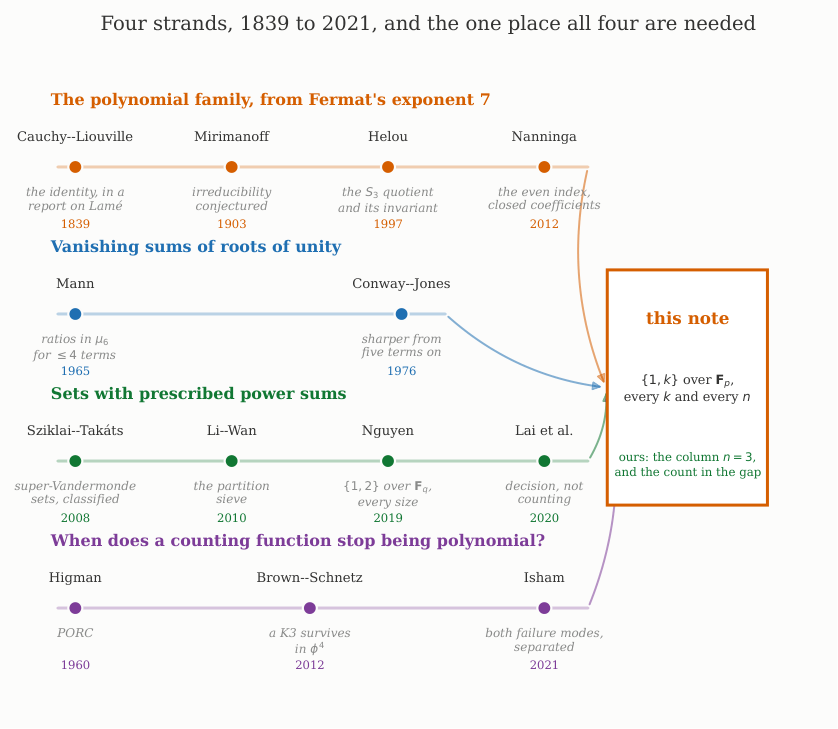
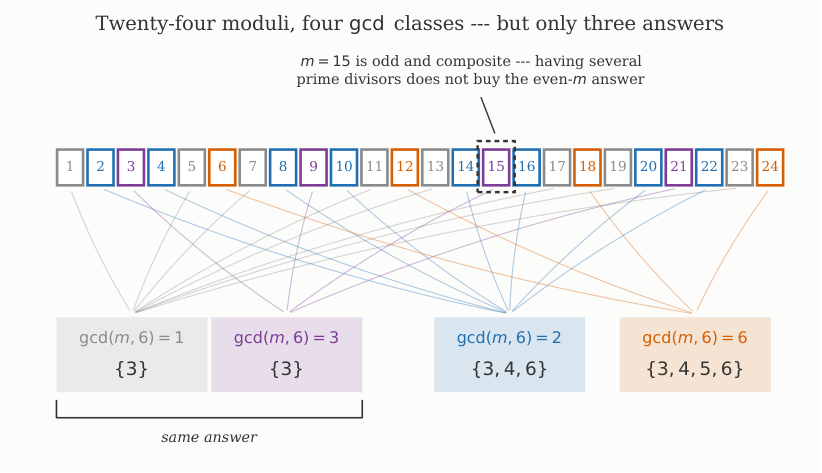
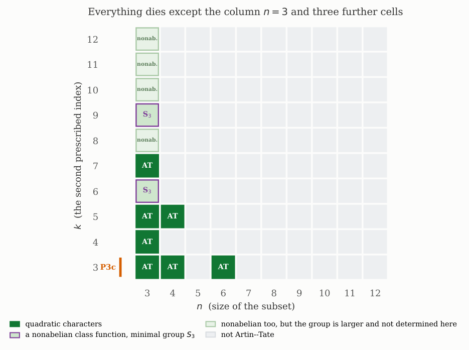
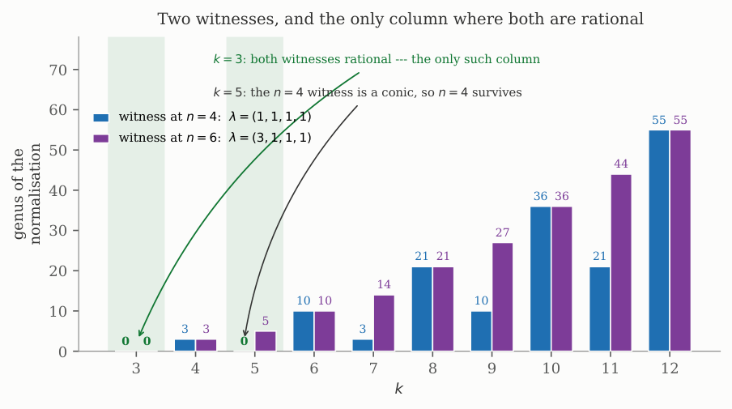
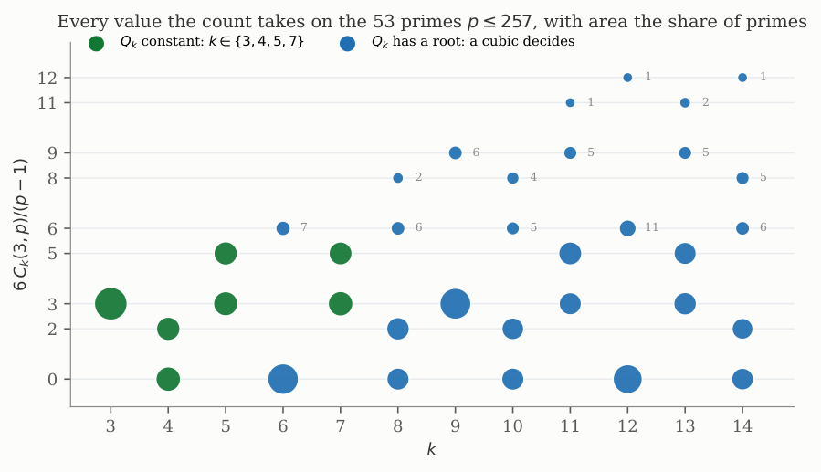
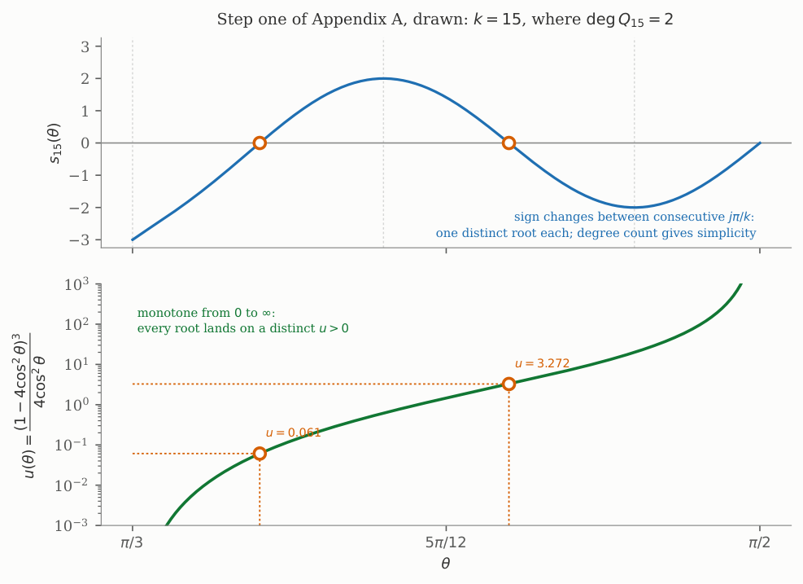
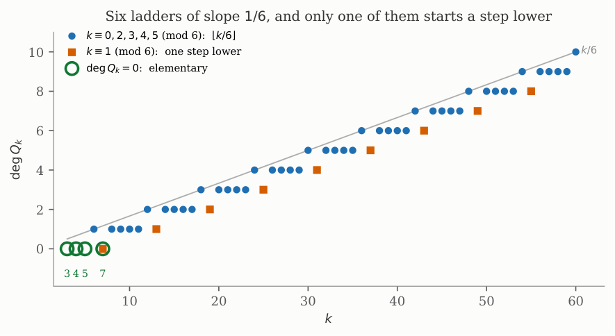
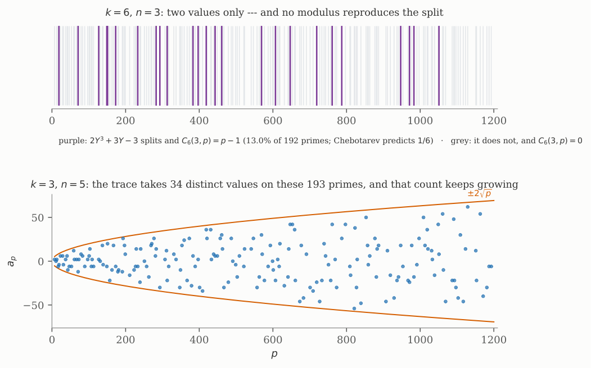

Subsets of Fₚ with two prescribed moments, Part II: every exponent — the classification, the Cauchy-Liouville-Mirimanoff polynomials that decide the column n=3, and where this moment subset sum stops being PORC
At a glance
What the paper contributes
Ck(n,p) counts the n-subsets of 𝔽p with Σt = Σtk = 0. Part I settled k = 3; this note settles every k ≥ 3.
- The singularity criterion (Proposition 2, Theorem 4): for a length-four stratum, singularity depends on k only through gcd(k−1, 6), by Mann's theorem, and the set of n with all length-four strata singular takes exactly three values.
- …is the wrong criterion (Proposition 5): what kills weight one is a genus-zero normalisation; at k = 5, n = 6 a singular stratum has genus 5. With the corrected criterion, Ck(n,p) is Artin–Tate exactly for n ∈ {3,4,6} (k = 3), {3,4} (k = 5) and n = 3 otherwise (Theorem 8), and the surviving counts are written down (Theorem 9, Proposition 11).
- The column n = 3 (Theorem 12, Propositions 15–16, Corollary 17): one term per root of Qk whose cubic Y³ + uY − u splits; elementary exactly for k ∈ {3, 4, 5, 7}, because deg Qk + 1 = dim M2k(SL2(ℤ)).
- Not PORC (Proposition 13, Lemmas 14 and 21): some fibre has group S3 — unconditionally, with forty printed certificates for 6 ≤ k ≤ 46 — and a permutation-character identity shows it cannot cancel. Observation 20 separates the two failures of PORC by weight (Isham has the coexistence).
- The polynomials Qk and the reduction to u are Helou's, Tzermias's and Nanninga's; the paper claims the arithmetic over 𝔽p.
🚀 Start here: Theorem 8: Cₖ(n,p) is Artin–Tate exactly for n ∈ 3,4,6 (k = 3), 3,4 (k = 5), 3 (every other k).
Main results:
- Theorem 8: Cₖ(n,p) is Artin–Tate exactly for n ∈ 3,4,6 (k = 3), 3,4 (k = 5), 3 (every other k)
- Theorem 12: the column n = 3 for every k, through Qₖ; elementary exactly for k ∈ 3, 4, 5, 7
- Corollary 17: Cₖ(3,p) is elementary iff dim M₂ₖ(SL₂(Z)) = 1, i.e. at the weights 6, 8, 10, 14
🗺️ Map of the results (click a box to go to it)
Dependencies in the written proof: an arrow A → B means that this proof of B uses A. Every result rests on its written proof; the tags record what was checked besides, and each statement's “Evidence & scope” block says how far. The colour of a box is its strongest tag, in the order above; the tags in the box give the rest. Boxes with a thick border are the main results; click a box to read the statement.
📐 Setting (copied from the paper, abstract, §1–§6)
(Abstract) Fix \(k\ge 3\) and an odd prime \(p\), and let \(C_k(n,p)\) count the \(n\)-subsets \(T\subseteq {\mathbb {F}}_p\) with \(\sum _{t\in T}t=\sum _{t\in T}t^{k}=0\). (§1) The Li–Wan partition sieve attaches to each partition \(\lambda =(w_1,\dots ,w_l)\vdash n\) the variety
(§2) Throughout, write \(m=k-1\) and \(\mu _m\) for the \(m\)-th roots of unity. (§3) For \(\lambda =(w_1,\dots ,w_l)\vdash n\) put
with \(m_j\) the number of parts of \(\lambda \) equal to \(j\), so that \(A_\lambda \) is the affine cone over \(V_\lambda \). (§5) Write \(\chi _p(a)=\bigl(\tfrac ap\bigr)\). (§6) Under \(e_1=0\) Newton’s recursion reads \(s_k=-e_2s_{k-2}+e_3s_{k-3}\) with \(s_1=0\), \(s_2=-2e_2\), \(s_3=3e_3\), so each \(s_k\) is a polynomial in \(e_2,e_3\). […] every factor of \(s_k\) other than \(e_2\) and \(e_3\) is a polynomial \(Q_k\) in \(u=e_2^{3}/e_3^{2}\).
2 The criterion, and why only \(\gcd (k-1,6)\) matters
Let \(\lambda =(w_1,\dots ,w_l)\) with \(w_i\) positive and \(\sum _iw_i=n\), and let \(V_\lambda \) be as in (1) over an algebraically closed field of characteristic \(0\) or \(p{\gt}\max (n,k)\). A point \(z\in V_\lambda \) is singular if and only if, after scaling, \(z_i\in \mu _m\) for every \(i\) and \(\sum _iw_iz_i=0\). All such singularities are ordinary double points.
🆕 Classical and new: not ours, cited: for k = 3 Segre; Elsenhans–Jahnel [EJdisc, Fact 2.8]; for arbitrary degree Dimca–Sticlaru [DS, Thm. 2.4].
↳ Used in: Proposition 5
\(V_\lambda \) is cut by a hyperplane \(H\) and the hypersurface \(F=\sum _iw_ix_i^k\). A point is singular iff the two differentials are proportional, i.e. \(kw_iz_i^{k-1}=\mu w_i\) for all \(i\) and some \(\mu \); since \(w_i\ne 0\) this says \(z_i^{k-1}=\mu /k\) is the same for all \(i\), and rescaling makes it \(1\). The point must also lie on \(H\), which is \(\sum _iw_iz_i=0\).
For the second statement, restrict to \(H\) the bilinear form \(B(u,v)=\sum _i(w_i/z_i)u_iv_i\), which is the Hessian of \(F\) at \(z\) up to a nonzero scalar because \(z_i^{k-2}=z_i^{-1}\). It is nondegenerate on the ambient space, and \(B(z,u)=\sum _iw_iu_i\), so the \(B\)-orthogonal of \(H\) is \(\langle z\rangle \). Since \(\sum _iw_iz_i=0\) we have \(z\in H\), whence \(\operatorname {rad}(B|_H)=\langle z\rangle \); modulo the radial direction the Hessian is nondegenerate, which is an ordinary double point.
🖼️ Figure 2

Where this note sits, and what it owes. Four strands of work that do not otherwise meet: the Cauchy–Liouville–Mirimanoff family, the arithmetic of vanishing sums of roots of unity, the counting of subsets with prescribed power sums, and the question of when a counting function stops being polynomial — in the order drawn. The argument below needs a piece from each — Helou and Tzermias for the family our polynomials turn out to be, Mann for the criterion, Li–Wan for the sieve, and the PORC/POFS vocabulary to say what the failure is — and the box on the right marks the part we claim, which is the smallest of the four.
Let \(\lambda \) have length four. Whether \(V_\lambda \) is singular depends on \(m\) only through \(\gcd (m,6)\).
🆕 Classical and new: a step towards Theorem 4, resting on Mann’s theorem [Mann, Thm. 1].
↳ Used in: Theorem 4
Decompose a vanishing relation \(\sum _{i=1}^{4}w_i\zeta _i=0\) into minimal vanishing subsums, a decomposition that never splits an individual term. A singleton cannot vanish, because \(|w_i\zeta _i|=w_i{\gt}0\); and a block of three would leave a singleton. So the only possibilities are that the relation is itself minimal, or that it splits as \(2+2\).
If it is minimal then, by Mann [ 24 ] , all ratios of participating roots have order dividing \(\prod _{q\le 4\ \text{prime}}q=6\); rotating one root to \(1\) puts the rest in \(\mu _m\cap \mu _6=\mu _{\gcd (m,6)}\), and whether such a relation exists is then a condition on \(\gcd (m,6)\) alone. If instead it splits as \(2+2\), each pair satisfies \(w_i\zeta _i=-w_j\zeta _j\), so taking absolute values gives \(w_i=w_j\) and then \(\zeta _i=-\zeta _j\); this requires \(-1\in \mu _m\), that is \(2\mid m\), which is again a condition on \(\gcd (m,6)\) alone.
🛡️ Evidence & scope
Program: the witness 1 + (−1) + ζ₇ + (−ζ₇) = 0 in μ₁₄; vanishing pairs for m ≤ 24, weights ≤ 5; ten length-four partitions depend only on gcd(m,6) for m ≤ 24. gates/P3d_mann_minimalidad.py
For \(m\ge 1\) let \(S_m\) be the set of \(n\ge 3\) such that every \(\lambda \vdash n\) of length four has \(V_\lambda \) singular. Then
🆕 Classical and new: ours — an elementary consequence of Mann [Mann] and the triangle inequality (the paper’s card).
↳ Used in: Theorem 8
There are no partitions of \(3\) of length four, so \(3\in S_m\) always. The remaining content is which of \((2,1,1,1)\), \((3,1,1,1)\), \((2,2,1,1)\) and \((1,1,1,1)\) admit a relation.
For \((1,1,1,1)\) the relation \(1+1-1-1=0\) works as soon as \(-1\in \mu _m\), i.e. \(2\mid m\); and for \(m\) odd no relation exists, since by Proposition 2 we may take \(m\in \{ 1,3\} \), and four unit-weight terms in \(\mu _3\) sum to zero only if each cube root of unity occurs equally often, which four terms cannot do. This is the condition \(4\in S_m\). The partition \((2,2,1,1)\) has the same relation when \(2\mid m\), and also \(2+2\omega +\omega ^{2}+\omega ^{2}=0\) when \(3\mid m\); that changes nothing, because whether \(6\in S_m\) is decided by \((3,1,1,1)\) below, which needs \(2\mid m\).
For \((2,1,1,1)\) there can be no proper vanishing subsum, because the weight \(2\) has no equal-weight partner; so the whole relation is minimal and, by Proposition 2, lives in \(\mu _6\) after normalising \(\zeta _1=1\). Inspection gives \((\zeta _2,\zeta _3,\zeta _4)\) a permutation of \((-1,\omega ,\omega ^2)\) with \(\omega \) a primitive cube root, and indeed \(2-1+\omega +\omega ^{2}=2-1-1=0\). Equivalently, in the polynomial form of the criterion, \(\Phi _6\) divides the weight polynomial:
So \((2,1,1,1)\) is singular exactly when \(6\mid m\), and then carries exactly six geometric singular points. Since \((2,1,1,1)\) is the only length-four partition of \(5\), this is precisely the condition \(5\in S_m\).
For \((3,1,1,1)\), equality in \(|3\zeta _1|=|\zeta _2+\zeta _3+\zeta _4|\) forces \(\zeta _2=\zeta _3=\zeta _4=-\zeta _1\), which needs \(-1\in \mu _m\); so \((3,1,1,1)\) is singular exactly when \(2\mid m\), with exactly one singular point. Since \((2,2,1,1)\) is singular whenever \(2\mid m\), this gives \(6\in S_m\iff 2\mid m\).
Finally, for \(n\ge 7\) the partition \((n-3,1,1,1)\) has \(n-3{\gt}3\), so \(|(n-3)\zeta _1|{\gt}|\zeta _2+\zeta _3+\zeta _4|\) and no relation can exist for any \(m\); hence no \(n\ge 7\) lies in \(S_m\).
🖼️ Figure 3

Proposition 2 and Theorem 4 together. What the picture shows and the statement does not is that the collapse is not injective: four \(\gcd \) classes produce only three answers, because \(\gcd =1\) and \(\gcd =3\) agree. The circled \(m=15\) is the case that kills the natural guess — having several prime divisors is not what buys the even-\(m\) answer. The sets drawn here are the \(S_m\) of the trichotomy — which \(n\) have a singular length-four stratum — and not the live cells of Figure 1: the two coincide only at \(k=3\), and Section 3 is about why.
🛡️ Evidence & scope
Program: S_m from the definition by exhaustive enumeration over μ_m⁴, 1 ≤ m ≤ 18, 3 ≤ n ≤ 10; the factorisation by Φ₆ exactly. gates/P3d_tricotomia_Sm.py
🧪 Lab: Figure 3: S_m computed from the definition
For each \(m=k-1\le m_{\max }\), the set \(S_m\) of \(n\le n_{\max }\) whose length-four strata are all singular, by searching \(\mu _m^4\) for a point with \(\sum \lambda _i z_i=0\) (Lemma 1) for every partition \(\lambda \) of \(n\) into four parts; then each \(m\) is compared with the answer Theorem 4 gives from \(\gcd (m,6)\) alone.
3 The criterion above is the wrong one
Let \(k=5\), so \(m=4\), and \(\lambda =(3,1,1,1)\). Then \(V_\lambda \) is a geometrically irreducible plane quintic with exactly one node, its normalisation has genus \(5\), and consequently \(C_5(6,p)\) is not elementary — although \(\lambda =(3,1,1,1)\) and the other length-four partition \((2,2,1,1)\) of \(6\) are both singular, so that \(6\in S_4\).
🆕 Classical and new: ours, and load-bearing (the paper’s card); it does not affect Part I, which is the case k = 3.
↳ Not used by another result of the paper.
The singular-point equation is \(3z_1+z_2+z_3+z_4=0\) with \(z_i\in \mu _4\); equality in the triangle inequality forces \([z_1:z_2:z_3:z_4]=[1:-1:-1:-1]\), so there is exactly one singular point, a node by Lemma 1. The quintic is geometrically irreducible: two groups of components of degrees \(a\) and \(5-a\) would meet in \(a(5-a)\ge 4\) points counted with multiplicity, and with all singularities ordinary nodes those intersections cannot be concentrated in the single available node. Hence \(g(\widetilde V_\lambda )=\tfrac {(5-1)(5-2)}2-1=5\), and \([H^1]\) has dimension \(10\). Since \(z_{(3,1,1,1)}=3\cdot 3!=18\), the summand \(\tfrac 1{18}[H^1(\widetilde V_\lambda )]\) appears in (4) with the sign common to the whole length-four stratum, so it cannot cancel; and an expression polynomial in \(p\) with fixed-character coefficients is Artin–Tate and has only even weights.
4 The classification
Say \(C_k(n,p)\) is Artin–Tate if there are a number field \(L/{\mathbb {Q}}\) finite Galois with group \(\Gamma \), a number field \(E\) splitting \(\Gamma \), and class functions \(\alpha _0,\dots ,\alpha _d\) on \(\Gamma \) with values in \(E\) — equivalently, \(E\)-linear combinations of Artin characters — such that
for all but finitely many \(p\). Then
🆕 Classical and new: ours — proved, not extrapolated (the paper’s card); the case k = 3 is Part I [P3c, Thm. 6 and Remark 7].
↳ Not used by another result of the paper.
The case \(k=3\) is [ 37 , Thm. 6 and Remark 7 ] : Theorem 6 there excludes elementary expressions for \(n\notin \{ 3,4,6\} \), and Remark 7 notes that the same weight-one argument excludes coefficients given by arbitrary Artin-type class functions of finite image, which is the class (5); for \(n=3,4,6\) the closed forms there are elementary, hence Artin–Tate. For \(n=3\) there are no length-four strata and every \(V_\lambda \) with \(\lambda \vdash 3\) is zero-dimensional, so the cones over them contribute only Artin–Tate classes and the count is an Artin-type class function in the sense of (5). It need not be a character: Proposition 11 produces the indicator of a conjugacy class, which is why (5) was stated for combinations rather than for traces. This is the column \(n=3\) of Figure 1, and Section 6 shows the class function need not be abelian. It remains to kill every \(n\ge 4\) when \(k\ne 3\), and every \(n\ge 5\) when \(k=5\).
Two uniform witnesses do it, and Figure 4 is the bookkeeping.
The witness at \(n=4\). Here \(\lambda =(1,1,1,1)\) and, eliminating \(x_4\), the curve is \(F_k(x,y,z)=x^k+y^k+z^k-(x+y+z)^k\). If \(k\) is even then \(m\) is odd, the curve is smooth by Theorem 4, and its genus is \(\binom {k-1}2\ge 3\). If \(k\) is odd then, up to a nonzero scalar,
with \(R_{k-3}\) of degree \(k-3\). Every singular point of \(F_k\) corresponds to four unit roots summing to zero, hence lies on one of the three pairing lines; since all singularities are nodes, \(R_{k-3}\) can have no singularity — off the lines it would give an unaccounted singular point of \(F_k\), on a line it would give multiplicity at least three — and it cannot be reducible, by Bézout. So \(R_{k-3}\) is smooth of genus \(\binom {k-4}2\). This is positive for odd \(k\ge 7\) and zero exactly for \(k=3\) (no residual curve at all) and \(k=5\) (a conic). Hence \(n=4\) dies for every \(k\ne 3,5\), and survives for \(k=3,5\).
The witness at \(n\ge 5\). For \(n\ge 7\) take \(\lambda =(n-3,1,1,1)\), smooth for every \(m\) by the last paragraph of Theorem 4, of genus \(\binom {k-1}2{\gt}0\) for \(k\ge 4\). For \(n=6\) take \(\lambda =(3,1,1,1)\): smooth when \(k\) is even and carrying exactly one node when \(k\) is odd, so its normalisation has genus \(\binom {k-1}2\) or \(\binom {k-1}2-1\), positive for every \(k\ge 4\). For \(n=5\) take \(\lambda =(2,1,1,1)\): smooth unless \(6\mid m\), and when \(6\mid m\) it carries exactly six nodes, so with \(r\) geometric components \(\sum _jg(\widetilde C_j)=\binom {k-1}2-6+r-1\ge 9\) because \(6\mid m\) forces \(k\ge 7\).
In each case a length-four stratum has normalisation of positive genus, so by (4) the class \(\operatorname {gr}^W_1\mathcal M_{n,k}\) is a sum of effective classes with one common sign and is nonzero.
To conclude, fix an embedding \(\iota \colon E\hookrightarrow \overline{\mathbb {Q}}_\ell \). Read through \(\iota \), the right-hand side of (5) is not the trace of a representation — its coefficients are fractional, as \(\mathbf1_{\{ 1\} }=\tfrac 16\chi _{\mathrm{reg}}\) above already shows — but it is the trace of a well-defined virtual one, an element of the Grothendieck group
of semisimple \(\overline{\mathbb {Q}}_\ell \)-representations with coefficients extended to \(E\). In that group the trace still determines the class, irreducible characters being \(E\)-linearly independent. Chebotarev gives agreement of traces at a set of primes of density one, so Brauer–Nesbitt forces agreement of the two classes there; and every weight occurring on the Artin–Tate side is even, while \(\operatorname {gr}^W_1\mathcal M_{n,k}\ne 0\). The comparison is thus between virtual representations throughout, which is all the weight argument needs. The positive direction for \(k=5\), \(n\in \{ 3,4\} \) is Section 5.
🖼️ Figure 1

The result of this note. A cell is live when \(C_k(n,p)\) is Artin–Tate. The column \(n=3\) never dies, because a zero-dimensional variety always contributes an Artin character; but the class function is expressible in quadratic characters only for \(k\in \{ 3,4,5,7\} \) (Theorem 12), so “Artin–Tate” and “elementary” part company from \(k=6\) on. Among the nonabelian cells the two shades are not decoration: the darker ones, \(k=6\) and \(k=9\), are those where the group of the class function is exactly \(S_3\), and the paler ones those where it is larger: \(S_3\times C_2\) for \(k=8,10,11\), and not determined here for \(k=12\). Which cells are which, and why, is settled after Theorem 12; Proposition 13 gives one \(S_3\) fibre whenever \(\deg Q_k{\gt}0\), which is weaker than either and is all Lemma 14 needs. Everything else is dead, and the row \(k=3\) of the companion note is the only one with more than two live cells.
🖼️ Figure 4

The proof of Theorem 8 as an accounting. A node removes exactly one unit of genus, so past \(k=3\) the nodes are never enough. The two shaded columns are the two where a witness happens to be rational; \(k=5\) is shaded because its \(n=4\) witness degenerates to a conic, which is why \(C_5(4,p)\) exists at all.
🧪 Lab: Figure 1 for your own range, and the counts of one cell
The grid of Theorem 8 for \(3\le k\le k_{\max }\), \(3\le n\le n_{\max }\) (the column \(n=3\) is split by \(\deg Q_k\), computed), and, for the cell \((k,n)\) you choose, \(C_k(n,p)\) counted over every \(n\)-subset of \(\mathbf F_p\). The counts are data; the verdict on the cell is the theorem.
🧪 Lab: Figure 4: the two witnesses, genus and singular points
The genera of the two witnesses of the proof of Theorem 8, \(\lambda =(1,1,1,1)\) for \(n=4\) and \(\lambda =(3,1,1,1)\) for \(n=6\), with what can be counted: the arithmetic genus of a plane curve of degree \(k\) and its singular points in \(\mu _{k-1}^4\) (Lemma 1). Where the two disagree, the curve is reducible.
5 The counts that survive
For \(p{\gt}3\),
and
At \(p=3\) the three counts are \(0\), \(1\) and \(0\); the two formulas for \(k=5\) also hold at \(p=5\), where they give \(2\) and \(1\).
🆕 Classical and new: ours — identities, not fits; the first recovers the size-three super-Vandermonde sets of Sziklai and Takáts [ST, Thm. 1.12].
↳ Used in: Theorem 8
Write \(e_j\) for the elementary symmetric functions of the elements of \(T\) and \(s_j\) for the power sums. Under \(e_1=0\), Newton’s identities give \(s_4=2e_2^2\) and \(s_5=-5e_2e_3\).
For three elements and \(s_4=0\) one gets \(e_2=0\), and the distinct triples with \(e_1=e_2=0\) are exactly the sets \(a\{ 1,\omega ,\omega ^2\} \) with \(\omega \) a primitive cube root, which exist iff \(\chi _p(-3)=1\); there are \((p-1)/3\) of them in that case and \(0\) otherwise, which is the first formula.
For three elements and \(s_5=0\), away from characteristic \(5\), either \(e_2=0\) or \(e_3=0\). The triples with \(e_3=0\) and \(e_1=0\) are \(\{ 0,a,-a\} \), of which there are \((p-1)/2\); the two families are disjoint, giving the second formula.
For four elements with \(e_1=0\) the identity \(s_5=-5e_2e_3\) still holds. Let \(A\) be the family with \(e_2=0\) and \(B\) the family with \(e_3=0\). Vanishing of \(e_3\) together with \(e_1=0\) makes the root polynomial even, so \(B=\{ \{ \pm a,\pm b\} : a,b\ne 0,\ b\ne \pm a\} \) and \(|B|=(p-1)(p-3)/8\). The condition \(e_2=0\) is the quadratic moment condition \(s_2=0\), whose distinct-coordinate sieve gives \(|A|=(p-1)\bigl(p-5-6\chi _p(-2)\bigr)/24\). The intersection consists of the sets \(\{ a,-a,ia,-ia\} \) with \(i^2=-1\), so \(|A\cap B|=(p-1)\bigl(1+\chi _p(-1)\bigr)/8\). Inclusion and exclusion give the third formula.
At \(p=5\) the argument for the two counts with \(k=5\) does not apply, since \(s_5=-5e_2e_3\) vanishes identically; but \(x^5=x\) on \({\mathbb {F}}_5\), so \(s_5=s_1\) and the only condition is \(s_1=0\). Translation by \(t\) shifts the sum of an \(n\)-subset by \(nt\), and \(n=3,4\) are invertible mod \(5\), so the \(\binom 5n\) subsets are spread evenly over the five sums: \(2\) for \(n=3\) and \(1\) for \(n=4\), which are the values of the two formulas.
🛡️ Evidence & scope
Program: against exhaustive enumeration over F_p: 16, 15 and 12 primes; |B| and |A ∩ B| separately. gates/P3d_tricotomia_Sm.py
Program: the k = 4 triples are the sets a1, ω, ω², 28 primes 5 ≤ p ≤ 113. gates/literatura_super_vandermonde.py
6 Two different failures, and only one of them is a trace
For \(p\nmid 66\),
The cubic \(2Y^3+3Y-3\) is irreducible over \({\mathbb {Q}}\) with discriminant \(-1188=-36\cdot 33\), so its Galois group is \(S_3\) and complete splitting is not determined by any congruence on \(p\).
🆕 Classical and new: ours (the paper’s card).
↳ Used in: Theorem 8
Newton with \(e_1=0\) gives \(s_6=-2e_2^3+3e_3^2\), and a solution with distinct entries has \(e_2e_3\ne 0\). So \(s_6=0\) says exactly
a condition on the scaling invariant alone. Scaling the three roots by \(t\) sends \(e_j\mapsto t^{\, j}e_j\), so \(t=e_2/e_3\) makes \(e_2\) and \(e_3\) equal, and their common value is \(e_2^{3}/e_3^{2}=\tfrac 32\): the normalised polynomial is \(Y^3+\tfrac 32Y-\tfrac 32\), one half of \(2Y^3+3Y-3\). When that splits, its nonzero scalings give exactly \(p-1\) distinct subsets. The discriminant is computed directly; it is not a square, so the Galois group is \(S_3\) and not \(C_3\), and Chebotarev distinguishes the identity class from a \(3\)-cycle inside any fixed cyclotomic congruence condition.
🛡️ Evidence & scope
Program: against exhaustive enumeration in the 17 primes 5 ≤ p ≤ 71 with p ∤ 66; density of split primes 0.160 below 400. gates/P3d_tricotomia_Sm.py
🧪 Lab: Figure 7: split primes of a cubic, and the traces a_p
Above: the primes where your cubic \(aY^3+bY^2+cY+d\) splits completely, its density, and whether a modulus \(M\le 120\) decides the split on these primes (an abelian cubic: yes; \(2Y^3+3Y-3\), the cubic of \(C_6(3,p)\): no). Below: the traces \(a_p\) of \(y^2=x^3+x^2-x\), behind \(C_3(5,p)\), with \(\pm 2\sqrt p\).
For every prime \(p\nmid 6k\mathfrak D_k\),
with \(f_u\) as in (7). Consequently \(C_k(3,p)\) is elementary — expressible in quadratic characters of fixed integers — if and only if \(Q_k\) is constant, that is, if and only if \(s_k\) is a monomial in \(e_2\) and \(e_3\). That happens exactly for
🆕 Classical and new: ours — the count, not the polynomials: Q_k and the reduction to u are in Helou, Tzermias and Nanninga [Helou; Tzermias; NanA].
↳ Used in: Corollary 17
The factor \(e_2\) contributes the triples with \(e_1=e_2=0\), which are the sets \(a\{ 1,\omega ,\omega ^2\} \) and number \((p-1)(1+\chi _p(-3))/6\); the factor \(e_3\) contributes \(\{ 0,a,-a\} \), of which there are \((p-1)/2\); and the two families meet only in the zero triple. Each root \(u_0\) of \(Q_k\) is an invariant of the scaling action, and the subsets realising it form a single orbit of \({\mathbb {F}}_p^{\times }\): if \(T\) has invariant \(u_0\ne 0\) and \(tT=T\) then \(t^{2}e_2=e_2\) and \(t^{3}e_3=e_3\), and \(e_2e_3\ne 0\) forces \(t^{2}=t^{3}=1\), hence \(t=1\). The action is therefore free and the orbit has exactly \(p-1\) elements, so \(u_0\) contributes \(p-1\) subsets when \(f_{u_0}\) splits into three distinct factors over \({\mathbb {F}}_p\) and none otherwise. This proves the displayed identity. For the criterion, one direction is immediate: if \(Q_k\) is constant the identity has only the two character terms. The other is not, and it is where the work is: if \(\deg Q_k{\gt}0\) then Proposition 13 and Lemma 14 show the fibre contribution is not PORC, so a fortiori it cannot be written in quadratic characters. For the list \(\{ 3,4,5,7\} \), the four monomials are \(s_3=3e_3\), \(s_4=2e_2^2\), \(s_5=-5e_2e_3\) and \(s_7=7e_2^2e_3\); that no other \(k\) joins them is not a computation but Proposition 15 below, which gives \(\deg Q_k\) in closed form for every \(k\) and shows it vanishes exactly there.
🖼️ Figure 5

Theorem 12 measured rather than stated: every value \(6C_k(3,p)/(p-1)\) takes on the \(53\) primes \(p\le 257\) (omitting \(p\mid k\)), with the area of each disc the share of primes giving it and the count printed for the rare ones. The green columns are the four elementary \(k\); everywhere else the values climb in steps of \(6\), one step per root of \(Q_k\) whose cubic splits, on top of the \(0\) or \(2\) contributed by \(e_2\) and the \(3\) contributed by \(e_3\).
🛡️ Evidence & scope
Program: the identity against exhaustive enumeration for 3 ≤ k ≤ 14 and primes 5 ≤ p ≤ 257 with p ∤ 6kD_k (620 pairs), with two failing controls. gates/P3d_columna_n3.py
🧪 Lab: Figure 5 for your own k and primes
Every value of \(6C_k(3,p)/(p-1)\) on the primes \(5\le p\le p_{\max }\), counted exactly (\(O(p)\) per prime: scaling acts freely on the triples), with \(\deg Q_k\) and whether \(e_2\), \(e_3\) divide \(s_k\).
If \(\deg Q_k{\gt}0\) then \(Q_k\) has a root \(u_0\) for which \(f_{u_0}(Y)=Y^3+u_0Y-u_0\) has Galois group \(S_3\) over \({\mathbb {Q}}(u_0)\).
🆕 Classical and new: unconditional, for every k (the paper’s card): the inequality A < 2^d for k ≥ 38 and forty printed certificates for 6 ≤ k ≤ 46.
↳ Used in: Theorem 12, Lemma 14
🖼️ Figure 8

Step one of this appendix, for \(k=15\), an example where \(Q_k\) has two roots — with one root nothing would show that they are simple, which is half the statement. The smallest such \(k\) is \(12\), by Proposition 15; \(15\) is drawn because its two roots are further apart on the \(u\)-axis and the guides do not collide. Above, \(s_k\) on the interval, changing sign once between consecutive \(j\pi /k\); each change is a root, and they can be counted. Below, the invariant \(u(\theta )\) of (10), which climbs monotonically from \(0\) to \(\infty \), so each root above lands on a positive value of \(u\) and on a different one. The two halves of “real, positive and simple” are the two properties of this curve. The lower axis is logarithmic and clipped to the band where the roots fall; the curve leaves it at both ends, which is what “from \(0\) to \(\infty \)” means.
🛡️ Evidence & scope
Program: for 6 ≤ k ≤ 46 with d > 0: roots of Q_k real, positive and simple (Sturm), P_k irreducible modulo the printed prime (Table 3). gates/P3d_s3_certificados.py
Program: the raw leading coefficient 2 or k and A | k, by a separate route for 3 ≤ k ≤ 400. gates/P3d_lc_Qk.py
🧪 Lab: Figure 8 for your own k
Step one of Appendix A: \(s_k(\theta )=(-2\cos \theta )^k+2\cos k\theta \) on \((\pi /3,\pi /2)\), its sign changes between consecutive \(j\pi /k\), and the values \(u(\theta )\) they land on; the number of roots is compared with \(\deg Q_k\) and each \(u\) is checked as a root of \(Q_k\).
Let \(L/{\mathbb {Q}}\) be a finite Galois extension containing the roots of \(Q_k\) and of every \(f_{u_0}\) for \(u_0\) a root of \(Q_k\), and let \(G=\operatorname {Gal}(L/{\mathbb {Q}})\). Fix a \(G\)-orbit \(\mathcal O\) of roots of \(Q_k\), let \(H\) be the stabiliser of one of them, and let \(K=\ker \bigl(H\to S_3\bigr)\) for the action of \(H\) on the three roots of that fibre’s cubic. For \(p\) unramified in \(L\) and \(p\nmid 6k\mathfrak D_k\), let \(N_{\mathcal O}(p)\) be the number of roots of \(Q_k\) in \(\mathcal O\) that lie in \({\mathbb {F}}_p\) and whose cubic splits completely. Then
with \(E\) a splitting field for \(G\) as in (5), the factor \(6/|H/K|\) being a positive rational. If moreover \(H/K\simeq S_3\) — which Proposition 13 provides for some orbit, and where the factor is \(1\) — then \(E[G/K]\) has an irreducible constituent of dimension greater than one. Since the orbits enter Theorem 12 with coefficient \(+1\) each, that constituent cannot cancel, and \(C_k(3,p)\) is not PORC.
🆕 Classical and new: ours (the paper’s card).
↳ Used in: Theorem 12
A coset \(gK\) is determined by the pair consisting of the root \(g(u_0)\in \mathcal O\) and the labelling of the three roots of \(f_{g(u_0)}\) induced by \(g\); the fibre of this correspondence over a root is \(H/K\), of size \(6\) exactly when \(H/K\simeq S_3\). Now \(\operatorname {Frob}_p\) fixes \(gK\) exactly when it fixes \(g(u_0)\) and acts trivially on the three roots of its cubic, that is, exactly when that root lies in \({\mathbb {F}}_p\) and its cubic splits completely. Each such root therefore contributes \(|H/K|\) fixed cosets and no other coset is fixed, which is the displayed identity, the character of a permutation representation being the number of fixed points.
For the second claim, \(H/K\) acts on the subset \(\{ hK\} \subseteq G/K\) by left translation, and that action is regular, so the image of \(G\) in \(\operatorname {Sym}(G/K)\) contains a subgroup isomorphic to \(H/K\simeq S_3\) and is not abelian. A representation all of whose irreducible constituents are one-dimensional has abelian image; hence \(E[G/K]\) has a constituent of dimension at least two. The coefficient field must be \(E\) and not \({\mathbb {Q}}\) here: over \(E\) every irreducible of an abelian group is one-dimensional, whereas over \({\mathbb {Q}}\) an abelian group can have irreducibles of larger dimension — already \({\mathbb {Q}}[C_3]={\mathbb {Q}}\times {\mathbb {Q}}(\zeta _3)\) has one of dimension two — so over \({\mathbb {Q}}\) the dimension alone would not exclude an abelian quotient. A PORC function is, by (5), one whose coefficients factor through an abelian quotient, and no such coefficient contains that constituent.
🛡️ Evidence & scope
Program: the identity 6N = χ_E[G/K](Frob_p) at k = 6 in 75 primes below 400, both sides computed independently, with a cyclic decoy. gates/P3d_caracter_regular_S3.py
For every \(k\ge 3\),
In particular \(\deg Q_k=0\) exactly for \(k\in \{ 3,4,5,7\} \), and since the degree is nondecreasing along each residue class modulo \(6\), no further \(k\) can return to zero.
Lean · ours, in partshow
added to the Lean repository after publication (21-oct-2026): the count #{(a, b) : 2a + 3b = k} = ⌊k/6⌋ + 1 − [k ≡ 1 mod 6] for every k
✅ Checked when this page was built: DegreeCount.lean compiles with Lean 4.35.0, no errors, no sorry. Axioms — card_degreePairs, card_degreePairs_eq_one_iff: propext, Classical.choice, Quot.sound.
Reproduce: Lean 4.35.0, Mathlib f0b4c8150aa0; in that Lean project, lake env lean DegreeCount.lean (SHA-256 of the compiled file: 55e85b8ae935ef0d…; a source page on this site may show it with comments edited, under its own hash).
Trust base: 🔒 kernel only — only part of the statement is formal (see the box). Lean: 2 results, standard axioms only
Proof: in this note·Covers: not formalized·Cite: Lemma 1, p. 4, doi:10.5281/zenodo.22886543
🆕 Classical and new: for odd k the number is Helou’s r_k [Helou]; the paper claims neither, only a self-contained proof for all k.
↳ Used in: Theorem 12
Newton–Waring at \(e_1=0\) is (9) below, and no coefficient there vanishes, so the monomials of \(s_k\) are exactly the pairs \((a,b)\ge 0\) with \(2a+3b=k\). Those pairs form a chain: \(b\) runs over the integers with \(b\equiv k\pmod2\) and \(0\le b\le k/3\), and \(a\) is determined. Dividing out the common monomial leaves consecutive powers of \(u=e_2^3/e_3^2\), whence
Counting the admissible \(b\) gives \(\lfloor k/6\rfloor +1\) in every residue class except \(k\equiv 1\pmod6\), where the parity constraint costs one, and subtracting \(1\) is the formula.
🖼️ Figure 6

Proposition 15. The grey line is \(k/6\). What the picture adds to the formula is that the exceptional class is a single ladder rather than a scatter of exceptions, and that the four circled points are the only ones that will ever touch zero.
🛡️ Evidence & scope
Program: both sides independently for 3 ≤ k ≤ 90, and every proper factor of s_k homogeneous in u. gates/P3d_grado_Qk.py
🧪 Lab: Figure 6: deg Q_k read off s_k
For every \(k\le k_{\max }\): \(s_k\) in \(e_2,e_3\) by \(s_k=-e_2s_{k-2}+e_3s_{k-3}\), its factors \(e_2\), \(e_3\) removed, as a polynomial in \(u=e_2^3/e_3^2\); its degree against \(\lfloor k/6\rfloor -[k\equiv 1 \bmod 6]\) (Proposition 15) and against \(\dim M_{2k}(\mathrm{SL}_2(\mathbf Z))-1\) (Proposition 16).
Substitute \(e_2=-3E_4\) and \(e_3=2E_6\), with \(E_4,E_6\) the normalised Eisenstein series. Then \(\mathcal F_k=s_k(-3E_4,2E_6)\) is a modular form of weight \(2k\) for \(\mathrm{SL}_2({\mathbb {Z}})\), and since \(M_*(\mathrm{SL}_2({\mathbb {Z}}))=\mathbf C[E_4,E_6]\) a basis of \(M_{2k}\) is indexed by the solutions of \(2a+3b=k\) — the same set that indexes the terms of \(s_k\). Hence
and \(\dim M_{2k}=1\) exactly for \(k\in \{ 3,4,5,7\} \).
Proof: in this note·Covers: not formalized·Cite: Proposition 16, p. 18, doi:10.5281/zenodo.22886543
🆕 Classical and new: the dictionary M_* = C[E₄, E₆] is standard [Milne, Prop. 4.16]; what is used is the coincidence of index sets.
↳ Used in: Corollary 17
🛡️ Evidence & scope
Program: dim M_2k = deg Q_k + 1 for 3 ≤ k ≤ 60; Waring’s formula against the recursions. gates/P3d_familia_Qk.py
For every \(k\ge 3\),
Proof: in this note·Covers: not formalized·Cite: Corollary 17, p. 18, doi:10.5281/zenodo.22886543
🆕 Classical and new: ours — but only the joining of two halves (the paper’s card).
↳ Not used by another result of the paper.
A Proof of Proposition 13
Suppose \(f_u\) is reducible over \({\mathbb {Q}}(u)\) for every root \(u\) of \(Q_k\), and let \(y(u)\in (0,1)\) be the real root of \(f_u\). Then the set \(\{ y(u):Q_k(u)=0\} \) is stable under \(\operatorname {Gal}(\overline{\mathbb {Q}}/{\mathbb {Q}})\), and the primitive integral multiple \(h\) of \(\prod _u(Y-y(u))\) lies in \({\mathbb {Z}}[Y]\), has degree \(d\), divides \(P_k\), and has leading coefficient \(B\mid A\).
Proof: in this note·Covers: not formalized·Cite: Lemma 21, p. 25, doi:10.5281/zenodo.22886543
↳ Used in: Proposition 13
Every root of \(Q_k\) is real by step one, so every conjugate of \(u\) is real and \({\mathbb {Q}}(u)\) is totally real. A reducible cubic \(f_u\) has a root \(r\in {\mathbb {Q}}(u)\). For each embedding \(\sigma \) of \({\mathbb {Q}}(u)\), \(\sigma (r)\) is a real root of \(f_{\sigma (u)}\), whose discriminant is negative, so it is the only one: \(\sigma (r)=y(\sigma (u))\). Hence \(r=y(u)\), and the conjugates of \(y(u)\) are the values of \(y\) at the conjugates of \(u\). The \(y(u)\) are distinct, since \(u=y^3/(1-y)\) recovers \(u\), so the product has degree \(d\) and divides \(P_k\) in \({\mathbb {Q}}[Y]\); by Gauss’s lemma its primitive integral multiple divides \(P_k\) in \({\mathbb {Z}}[Y]\), whence \(B\mid A\).
🖼️ Figure 7

Observation 20, measured. Both panels show a failure of polynomiality on residue classes, and they are different failures: above, a two-valued count whose partition of the primes no modulus reproduces; below, a growing set of observed Frobenius traces. The “not POFS” conclusion comes from weight one and not from this numerical growth: one quantity is bounded by a theorem, while the observed support of the other keeps growing across these windows. A reader who wants a single picture of why “not PORC” is too coarse a verdict for this classification should look at these two panels together.
📊 Tables
Every table of the paper, in its order: click one to unfold it, with where the paper cites it, how its numbers were checked, and its data as CSV. The typeset table is one click away, on its page of the PDF.
Table 1. Theorem 4 in three rows. The tinted rows are the two where something beyond $n=3$ is singular; the bottom one is where $n=5$ enters, and the certificate is the divisibility by $\Phi_6$ that puts it there. Note that this table answers the singularity question, which Section 3 shows is not the same as the Artin–Tate question.
| $m=k-1$ | $\gcd(m,6)$ | $S_m$ | certificate |
| odd | $1$ or $3$ | $\{3\}$ | — |
| $2\mid m$, $3\nmid m$ | $2$ | $\{3,4,6\}$ | $1+1-1-1=0$ in $\mu_2$ |
| $6\mid m$ | $6$ | $\{3,4,5,6\}$ | $2+X^{2}+X^{3}+X^{4}=\Phi_6\cdot(X^{2}+2X+2)$ |
Colour: grey = nothing.
Table 2. Every count this note and its companion put in closed form, with the reason the length-four obstruction failed to appear in each. The last row is tinted differently because it is closed but not in quadratic characters — it is the subject of Section 6.
| count | closed form | why no obstruction | checked |
| $C_3(n,p)$, $n=3,4,6$ | see [P3c] | rational, or none | $11$/$33$ primes |
| $C_4(3,p)$ | $\frac{p-1}6\bigl(1+\chi_p(-3)\bigr)$ | no length-four stratum | $16$ primes |
| $C_5(3,p)$ | $\frac{p-1}6\bigl(4+\chi_p(-3)\bigr)$ | no length-four stratum | $15$ primes |
| $C_5(4,p)$ | $\frac{p-1}{24}\bigl(4p-17-6\chi_p(-2)-3\chi_p(-1)\bigr)$ | the witness is a conic | $12$ primes |
| $C_7(3,p)$ | $\frac{p-1}6\bigl(4+\chi_p(-3)\bigr)$ | $s_7$ is a monomial | $53$ primes |
| $C_6(3,p)$ | $(p-1)\cdot\mathbf 1\{2Y^{3}{+}3Y{-}3\ \text{splits}\}$ | a nonabelian class function | $17$ primes |
Colour: red = no / fails.
Table 3. The forty certificates behind Proposition 13. For each $k$ with
$\deg Q_k>0$ in the range, $d=\deg Q_k$, $A=\mathrm{lc}(Q_k)$, and $p$ is a prime modulo which
$P_k$ — of degree $3d$ — remains irreducible, which proves it irreducible over ${\mathbb{Q}}$. Each
row is checkable in one line of any computer algebra system and requires nothing of ours to be
believed. Shade of $A$ is the margin $2^{d}/A$ by which the
inequality holds — dark where it barely does, pale where it holds by orders of magnitude —
and the tinted rows are the seven where it does not hold at all. The two codes together are the
shape of the argument: the margin grows exponentially in $k$ while $A\le k$ grows at most
linearly, so the tinted rows can only occur early, and they do. The table is generated by
gates/P3d_s3_certificados.py, not typed.
| $k$ | $d$ | $A$ | $p$ | $k$ | $d$ | $A$ | $p$ | $k$ | $d$ | $A$ | $p$ |
| 6$^\dagger$ | 1 | 2 | 7 | 21$^\dagger$ | 3 | 21 | 97 | 35$^\dagger$ | 5 | 35 | 113 |
| 8 | 1 | 1 | 11 | 22 | 3 | 2 | 281 | 36 | 6 | 2 | 89 |
| 9$^\dagger$ | 1 | 3 | 2 | 23 | 3 | 1 | 23 | 37 | 5 | 1 | 31 |
| 10$^\dagger$ | 1 | 2 | 11 | 24 | 4 | 2 | 71 | 38 | 6 | 2 | 5 |
| 11 | 1 | 1 | 2 | 25 | 3 | 5 | 59 | 39 | 6 | 39 | 11 |
| 12 | 2 | 2 | 5 | 26 | 4 | 2 | 37 | 40 | 6 | 2 | 7 |
| 13 | 1 | 1 | 3 | 27 | 4 | 9 | 113 | 41 | 6 | 1 | 179 |
| 14 | 2 | 2 | 5 | 28 | 4 | 2 | 13 | 42 | 7 | 2 | 31 |
| 15$^\dagger$ | 2 | 15 | 11 | 29 | 4 | 1 | 71 | 43 | 6 | 1 | 5 |
| 16 | 2 | 1 | 29 | 30 | 5 | 2 | 11 | 44 | 7 | 2 | 191 |
| 17 | 2 | 1 | 11 | 31 | 4 | 1 | 23 | 45 | 7 | 45 | 29 |
| 18 | 3 | 2 | 61 | 32 | 5 | 1 | 101 | 46 | 7 | 2 | 17 |
| 19 | 2 | 1 | 13 | 33$^\dagger$ | 5 | 33 | 41 | ||||
| 20 | 3 | 2 | 29 | 34 | 5 | 2 | 29 |
Colour: blue shade = the number’s size within its column.
References
- 1
P. Belkale and P. Brosnan, Matroids, motives, and a conjecture of Kontsevich, Duke Math. J. 116 (2003), no. 1, 147–188. 🔎 find it
- 2
C. Birkenhake and H. Lange, Complex Abelian Varieties, 2nd ed., Grundlehren der mathematischen Wissenschaften 302, Springer, Berlin, 2004. 🔎 find it
- 3
F. Brown and O. Schnetz, A K3 in \(\phi ^4\), Duke Math. J. 161 (2012), no. 10; arXiv:1006.4064.
- 4
A. Dimca and G. Sticlaru, Waring rank of symmetric tensors, and singularities of some projective hypersurfaces, arXiv:1902.01351, Thm. 2.4.
- 5
M. du Sautoy and M. Vaughan-Lee, Non-PORC behaviour of a class of descendant \(p\)-groups, J. Algebra 361 (2012), 287–312; arXiv:1106.5530.
- 6
A.-S. Elsenhans and J. Jahnel, The discriminant of a cubic surface, arXiv:1006.0721 (2010), Fact 2.8 and Examples 2.9.
- 7
S. R. Ghorpade and G. Lachaud, Étale cohomology, Lefschetz theorems and number of points of singular varieties over finite fields, Moscow Math. J. 2 (2002), 589–631; corrected version arXiv:0808.2169, Prop. 3.2.
- 8
C. Goldstein, Gabriel Lamé et la théorie des nombres: “une passion malheureuse”?, Bulletin de la Sabix 44 (2009), 131–139. The letter to Dirichlet is in the NachlaSS Dirichlet, Staatsbibliothek zu Berlin. 🔎 find it
- 9
E. W. Howe and H. J. Zhu, On the existence of absolutely simple abelian varieties of a given dimension over an arbitrary field, J. Number Theory 92 (2002), no. 1, 139–163. 🔎 find it
- 10
G. Higman, Enumerating \(p\)-groups. II: Problems whose solution is PORC, Proc. London Math. Soc. (3) 10 (1960), 566–582. 🔎 find it
- 11
X. Cao, W.-S. Chou and J. Gu, On the number of solutions of certain diagonal equations over finite fields, Finite Fields Appl. 42 (2016), 225–252. 🔎 find it
- 12
F. N. Castro, I. Rubio, P. Guan and R. Figueroa, On systems of linear and diagonal equation of degree \(p^i+1\) over finite fields of characteristic \(p\), Finite Fields Appl. 14 (2008), 648–657. 🔎 find it
- 13
A. Cauchy and J. Liouville, Rapport sur un mémoire de M. Lamé relatif au dernier théorème de Fermat, C. R. Acad. Sci. Paris 9 (1839), 359–363. 🔎 find it
- 14
J. Giménez, G. Matera, M. Pérez and M. Privitelli, Smooth symmetric systems over a finite field and applications, J. Algebra (2024); arXiv:2312.09477.
- 15
J. F. Gottig, M. Pérez and M. Privitelli, An approach to the moments subset sum problem through systems of diagonal equations over finite fields, arXiv:2401.06964 (2024).
- 16
C. Helou, Cauchy–Mirimanoff polynomials, C. R. Math. Rep. Acad. Sci. Canada 19 (1997), no. 2, 51–57. 🔎 find it
- 17
K. Isham, Problems relating to arcs in projective space and subrings in \({\mathbb {Z}}^n\), Ph.D. dissertation, University of California, Irvine, 2021; https://escholarship.org/uc/item/0ms4x869. See §2.3.3, Prop. 2.3.7, Ex. 2.3.8 and §2.4.2.
- 18
T. Lai, A. Marino, A. Robinson and D. Wan, Moment subset sums over finite fields, Finite Fields Appl. 62 (2020), 101607; arXiv:1910.05894.
- 19
E. Kani and M. Rosen, Idempotent relations and factors of Jacobians, Math. Ann. 284 (1989), no. 2, 307–327. 🔎 find it
- 20
H. Karapetyan and R. Hambardzumyan, Irreducibility and locus of complex roots of polynomials related to Fermat’s Last Theorem, arXiv:2510.00020 (2025–2026).
- 21
J. Li and D. Wan, A new sieve for distinct coordinate counting, Sci. China Math. 53 (2010), 2351–2362. 🔎 find it
- 22
A. Blokhuis, G. Marino, F. Mazzocca and O. Polverino, On almost small and almost large super-Vandermonde sets in \(\mathrm{GF}(q)\), Des. Codes Cryptogr. 84 (2017), 197–201. 🔎 find it
- 23
J. H. Conway and A. J. Jones, Trigonometric diophantine equations (On vanishing sums of roots of unity), Acta Arith. 30 (1976), 229–240, Thm. 5. 🔎 find it
- 24
H. B. Mann, On linear relations between roots of unity, Mathematika 12 (1965), 107–117, Thm. 1; doi:10.1112/S0025579300005210. A modern statement with a full proof is Schwartz–Solymosi–de Zeeuw [ 26 , Thm. 3.1 ] .
- 25
P. Ribenboim, Fermat’s Last Theorem for Amateurs, Springer, New York, 1999, pp. 226–230. 🔎 find it
- 26
R. Schwartz, J. Solymosi and F. de Zeeuw, Rational distances with rational angles, Mathematika 58 (2012), 409–418; arXiv:1008.3671, Thm. 3.1.
- 27
M. Moisio and K. Ranto, Elliptic curves and explicit enumeration of irreducible polynomials with two coefficients prescribed, Finite Fields Appl. 14 (2008), 798–815. 🔎 find it
- 28
J. S. Milne, Modular Functions and Modular Forms, course notes, v1.31 (2017), Prop. 4.16. 🔎 find it
- 29
S. Ramanujan, On certain arithmetical functions, Trans. Cambridge Philos. Soc. 22 (1916), no. 9, 159–184. 🔎 find it
- 30
L. J. Mordell, On Mr Ramanujan’s empirical expansions of modular functions, Proc. Cambridge Philos. Soc. 19 (1917), 117–124. 🔎 find it
- 31
P. Deligne, La conjecture de Weil. I, Publ. Math. IHES 43 (1974), 273–307. 🔎 find it
- 32
D. Mirimanoff, Sur l’équation \((x+1)^l-x^l-1=0\), Nouv. Ann. Math. 3 (1903), 385–397. 🔎 find it
- 33
P. M. Nanninga, Cauchy–Mirimanoff and related polynomials, J. Aust. Math. Soc. 92 (2012), no. 2, 269–280. 🔎 find it
- 34
P. M. Nanninga, Cauchy–Mirimanoff and related polynomials, Ph.D. thesis, Australian National University, 2013. 🔎 find it
- 35
Y. Zhang, D. Zheng, X. Wang and M. Yuan, Some new results on the second moment \(k\)-subset sum problem over finite fields, Finite Fields Appl. 117 (2027), 102877; doi:10.1016/j.ffa.2026.102877. 🔎 find it
- 36
J. Nguyen, Higher moments subset sum problem over finite fields, Ph.D. dissertation, University of California, Irvine, 2019; https://escholarship.org/uc/item/2cr0w697.
- 37
C. Marín, Subsets of \({\mathbb {F}}_p\) with two prescribed moments, Part I: the pair \(\{ 1,3\} \) — exact counts of totally split squarefree polynomials with a non-consecutive pair of prescribed coefficients, and exactly when those counts are elementary, 2026; doi:10.5281/zenodo.22886540.
- 38
C. Marín, The order generated by a column of the \(\mathrm{SU}(n)_k\) \(S\)-matrix is locally a numerical semigroup ring, Part II, 2026; doi:10.5281/zenodo.22864266.
- 39
J. Tate, Endomorphisms of abelian varieties over finite fields, Invent. Math. 2 (1966), 134–144. 🔎 find it
- 40
W. C. Waterhouse, Abelian varieties over finite fields, Ann. Sci. École Norm. Sup. (4) 2 (1969), 521–560. 🔎 find it
- 41
P. Tzermias, On Cauchy–Liouville–Mirimanoff polynomials, Canad. Math. Bull. 50 (2007), no. 2, 313–320. 🔎 find it
- 42
P. Tzermias, On Cauchy–Liouville–Mirimanoff polynomials II, Funct. Approx. Comment. Math. 46 (2012), no. 1, 15–27; doi:10.7169/facm/2012.46.1.2. 🔎 find it
- 43
I. Todhunter, Theory of Equations, Macmillan and Co., London, 1861. 🔎 find it
- 44
T. Muir, Cauchy’s theorem regarding the divisibility of \((x+y)^n+(-x)^n+(-y)^n\), Messenger of Math. 8(2) (1878), 119–120. 🔎 find it
- 45
P. Sziklai and M. Takáts, Vandermonde sets and super-Vandermonde sets, Finite Fields Appl. 14 (2008), 1056–1067; doi:10.1016/j.ffa.2008.06.004. Theorem 1.12. 🔎 find it
- 46
J. R. Stembridge, Counting points on varieties over finite fields related to a conjecture of Kontsevich, Ann. Comb. 2 (1998), no. 4, 365–385. 🔎 find it
- 47
M. Stanojkovski and C. Voll, Hessian matrices, automorphisms of \(p\)-groups, and torsion points of elliptic curves, Math. Ann. 381 (2021), 593–629; arXiv:1912.09860, §1.5.2.